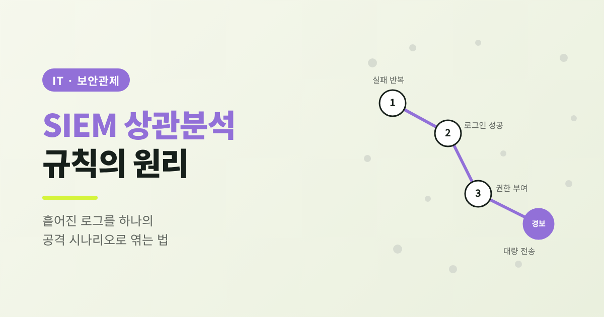
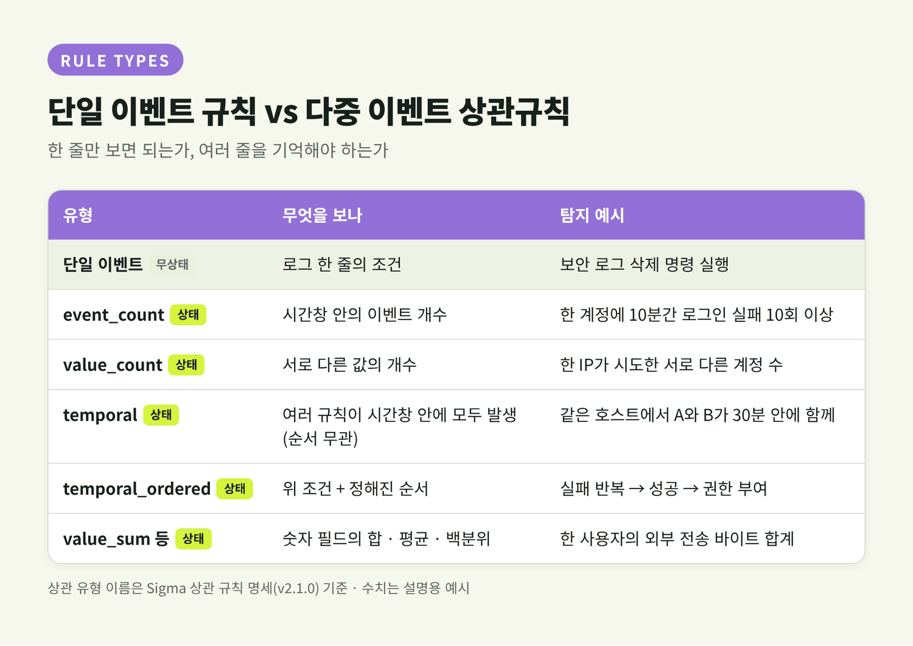
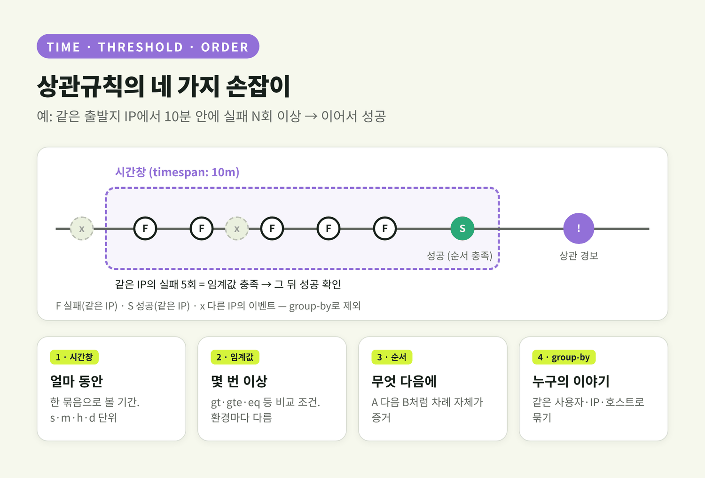
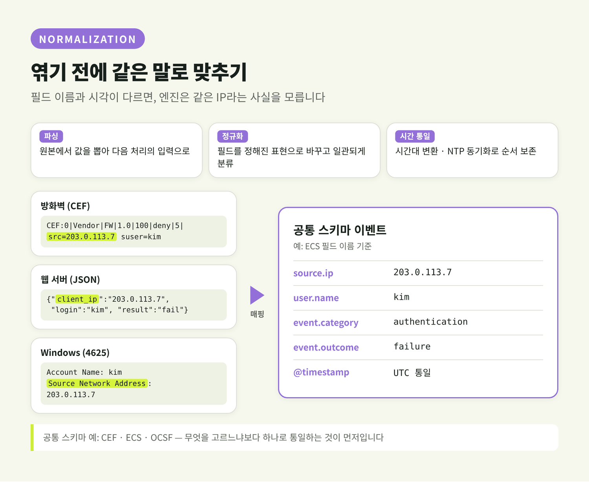
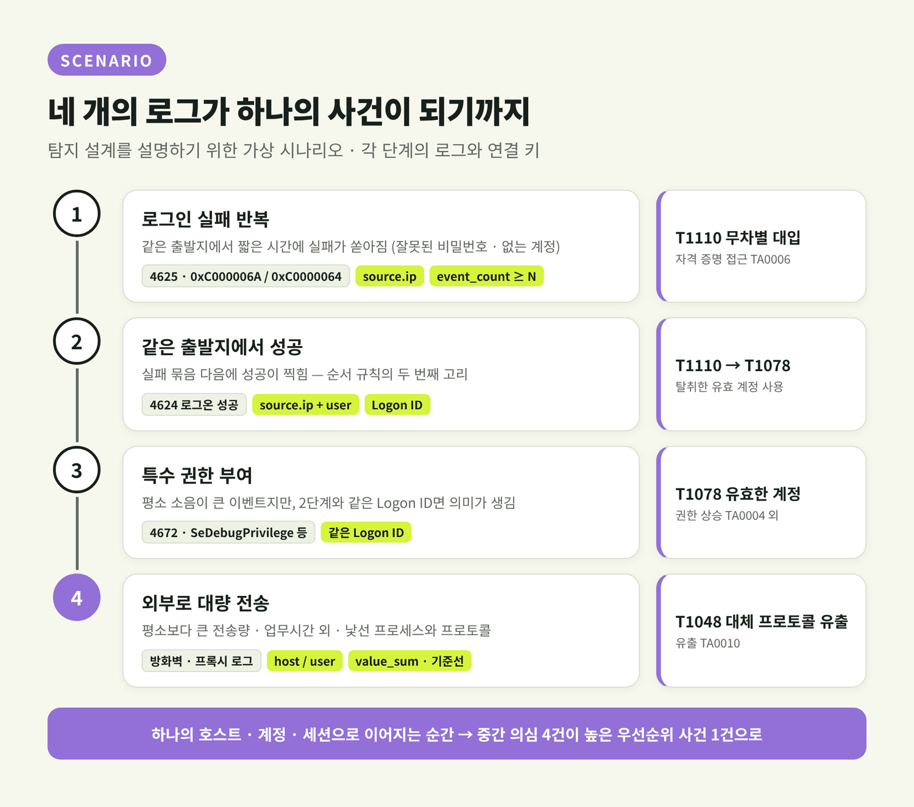
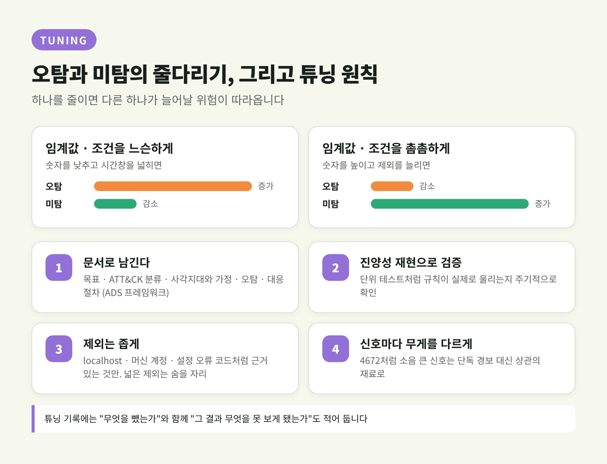
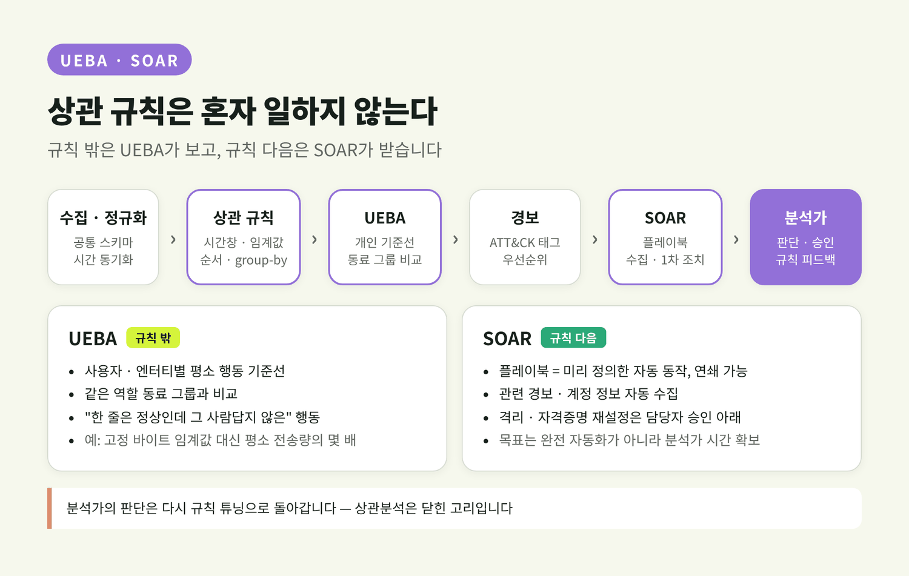

SIEM 상관분석 규칙 원리 — 흩어진 로그를 공격 시나리오로 엮는 법

이번 글에서는 SIEM 상관분석 규칙이 어떤 원리로 움직이는지 정리해 보겠습니다. 로그인 실패, 권한 부여, 외부 전송처럼 따로 보면 평범한 로그가 어떻게 하나의 공격 시나리오로 묶이는지가 핵심입니다. 보안관제 담당자와 로그 파이프라인을 다루는 백엔드 개발자를 염두에 두고, 탐지하는 쪽의 관점에서만 다룹니다.
세 줄 요약
- 상관분석은 "두 개 이상의 로그 사이의 관계를 찾는 일"이고, 그 관계는 시간창·임계값·순서·같은 엔터티로 정의됩니다.
- 규칙보다 먼저 정규화가 있어야 합니다. 필드 이름과 시각이 맞지 않으면 아무리 좋은 규칙도 엮지 못합니다.
- 규칙은 완성품이 아니라 가설입니다. ATT&CK로 위치를 표시하고, 오탐·미탐을 기록하며 계속 다듬어야 합니다.
■ 상관분석이란 무엇인가
SIEM이라는 이름은 2005년 가트너(Gartner) 애널리스트 마크 니콜렛(Mark Nicolett)과 암릿 윌리엄스(Amrit Williams)가 처음 썼습니다. 로그를 오래 쌓고 보고하는 SIM, 실시간으로 지켜보며 이벤트를 엮고 알리는 SEM을 합친 말입니다. 상관분석은 이 가운데 SEM 쪽의 심장에 해당합니다.
미국 국립표준기술연구소(NIST)의 로그 관리 지침 SP 800-92는 상관을 짧게 정의합니다. "두 개 이상의 로그 항목 사이의 관계를 찾는 것." 가장 흔한 형태는 규칙 기반 상관이며, 타임스탬프·IP 주소·이벤트 유형 같은 값으로 항목을 맞춰 봅니다.
예전 침입탐지시스템(IDS)은 패킷 하나, 로그 한 줄을 규칙과 대조하는 데 머물렀습니다. 그래서 오탐이 많았고, 여러 시스템에서 나온 이벤트를 한곳에 모아 엮지 못했습니다. 지금의 SIEM은 방화벽·서버·인증 시스템·클라우드 로그를 함께 놓고 "이 사건과 저 사건이 같은 이야기인가"를 묻습니다.
■ 단일 이벤트 규칙과 다중 이벤트 상관규칙
규칙은 크게 두 갈래입니다.
단일 이벤트 규칙은 로그 한 줄만 보고 판단합니다. "보안 로그 지우기 명령이 실행됐다"처럼 그 자체로 의심스러운 행위를 잡는 데 알맞습니다. 상태를 기억할 필요가 없어 가볍고 빠릅니다.
다중 이벤트 상관규칙은 여러 줄을 함께 봅니다. 로그인 실패 한 번은 오타일 수 있습니다. 같은 출발지에서 짧은 시간에 실패가 쏟아지고, 곧이어 성공이 찍혔다면 이야기가 달라집니다. 한 줄로는 정상과 공격을 구별할 수 없는 경우가 훨씬 많기 때문에 상관규칙이 필요합니다.
벤더 중립 규칙 형식인 Sigma의 상관 규칙 명세(v2.1.0, 2025년 8월)는 이 다중 이벤트 패턴을 몇 가지 유형으로 정리해 두었습니다. 특정 제품 문법이 아니라 개념의 지도로 읽기에 좋습니다.
| 유형 | 무엇을 보나 | 탐지 예시 |
|---|---|---|
| event_count | 시간창 안의 이벤트 개수 | 한 계정에 10분간 실패 로그인 10회 이상 |
| value_count | 서로 다른 값의 개수 | 한 IP가 시도한 서로 다른 계정 수 (스프레이 의심) |
| temporal | 여러 규칙이 시간창 안에 모두 발생 (순서 무관) | 같은 호스트에서 A와 B가 30분 안에 함께 |
| temporal_ordered | 위 조건 + 정해진 순서 | 실패 반복 → 성공 → 권한 부여 |
| value_sum 등 | 숫자 필드의 합·평균·백분위 | 한 사용자의 외부 전송 바이트 합계 |

■ 상관의 세 가지 축 — 시간창, 임계값, 순서
상관규칙을 뜯어보면 거의 언제나 세 가지 손잡이가 있습니다.
첫째, 시간창(time window)입니다.
"얼마 동안 일어난 일을 한 묶음으로 볼 것인가"를 정합니다.
Sigma 명세에서는 timespan: 10m처럼 숫자와 단위(s, m, h, d)로 적습니다.
둘째, 임계값(threshold)입니다. "몇 번 이상이면 이상한가"를 정합니다. 조건은 gt, gte, lt, lte, eq, neq 가운데 하나로 표현하고, 범위가 필요하면 두 조건을 붙입니다.
셋째, 순서(sequence)입니다. "A 다음에 B"처럼 사건의 차례 자체가 증거가 되는 경우입니다.
여기에 하나가 더 붙습니다. 바로 그룹 기준(group-by)입니다. 실패 10회가 서로 다른 100명에게서 흩어져 나온 것이라면 의미가 없습니다. 같은 사용자, 같은 출발지 IP, 같은 호스트처럼 "누구의 이야기인가"를 묶어야 숫자가 뜻을 갖습니다.
흥미로운 점은 같은 '실패 후 성공' 탐지라도 숫자가 제각각이라는 사실입니다. Sigma 명세의 예시는 사용자별로 10분 안에 실패 10회 이상, 그 뒤 성공을 temporal_ordered로 엮습니다. 반면 공개된 Elastic의 사전 제작 규칙 "Multiple Logon Failure Followed by Logon Success"는 컴퓨터 이름과 출발지 IP로 묶어 5초 안에 실패 5회, 그 뒤 성공을 봅니다. MITRE ATT&CK의 무차별 대입(T1110) 페이지도 구체적인 숫자는 제시하지 않습니다.
흔한 오해가 여기서 생깁니다. "표준 임계값이 어딘가 정해져 있다"는 믿음입니다. 실제로는 환경마다 정상의 모양이 다르므로, 숫자는 조직이 직접 정해야 하는 값입니다.

■ 상태 저장 엔진 — 규칙은 무엇을 기억하나
단일 이벤트 규칙은 기억이 필요 없습니다. 상관규칙은 다릅니다. "이 IP에서 지금까지 실패가 몇 번이었나"를 어딘가에 들고 있어야 합니다. 이런 엔진을 상태 저장(stateful) 엔진이라고 부릅니다.
복합 이벤트 처리(CEP) 엔진 문서를 보면 이 구조가 잘 드러납니다. 이벤트는 "특정 시점에 일어난, 바뀌지 않는 사실"로 다뤄집니다. 엔진은 일정 시간 동안의 이벤트만 보는 슬라이딩 시간창, 최근 N개만 보는 길이창을 씁니다. 더 이상 어떤 규칙에도 쓰이지 않는 이벤트는 만료시켜 메모리에서 내립니다. 예를 들어 짝이 되는 이벤트를 최대 10초 기다리는 규칙이라면, 10초가 지난 이벤트는 엔진이 알아서 지웁니다.
백엔드 개발자에게 익숙한 질문들이 여기서 나옵니다.
- 상태 크기: 그룹 키(사용자·IP)가 많아질수록 메모리가 늘어납니다. 시간창이 길수록 오래 들고 있어야 합니다.
- 만료와 발화 후 처리: 경보를 낸 뒤 창을 비울지, 계속 셀지 정해야 합니다. 오픈소스 Sigma 엔진 rsigma는 이를 별도 설정(발화 후 창 상태 처리)으로 둡니다.
- 재시작 복원: 엔진이 내려갔다 올라오면 세던 숫자가 사라집니다. 같은 엔진은 상태 스냅샷 직렬화 기능을 제공합니다.
- 시각의 기준: 타임스탬프가 없거나 파싱되지 않는 이벤트를 어떻게 다룰지도 정해야 합니다.
검색 기반으로 주기 실행되는 규칙도 사정은 비슷합니다. 앞서 본 Elastic 규칙은 5분마다 돌며 최근 9분치를 조회합니다. 실행 간격보다 조회 범위를 넓게 잡은 것인데, 늦게 도착한 로그를 놓치지 않으려는 겹침으로 읽힙니다.
■ 정규화와 파싱 — 엮기 전에 같은 말로 맞추기
상관규칙의 실패 원인 중 상당수는 규칙이 아니라 데이터에 있습니다.
방화벽은 src라 쓰고, 웹 서버는 client_ip라 쓰고, 인증 서버는 또 다른 이름을 씁니다.
이름이 다르면 엔진은 같은 IP라는 사실을 모릅니다.
NIST SP 800-92는 이 과정을 단계별로 구분합니다. 파싱은 로그에서 값을 뽑아 다음 처리의 입력으로 만드는 일입니다. 정규화는 각 필드를 정해진 표현으로 바꾸고 일관되게 분류하는 일입니다. 대표적인 예가 날짜·시간 형식 통일입니다.
그래서 등장한 것이 공통 스키마입니다.
- CEF(Common Event Format):
CEF:버전|벤더|제품|제품버전|이벤트 클래스 ID|이름|심각도|확장필드형태의 텍스트 형식입니다. 심각도는 0~10 정수나 문자열로, 확장필드는src=10.0.0.1처럼 key=value로 적습니다. - ECS(Elastic Common Schema): 이벤트를
event.kind → event.category → event.type → event.outcome네 단계로 분류합니다. 인증 시도라면 category에 authentication, 결과에 success나 failure를 담는 식입니다. - OCSF(Open Cybersecurity Schema Framework): 2022년 8월 AWS와 Splunk가 주도하고 15개 조직이 함께 발표한 개방형 스키마입니다. 정규화에 드는 시간을 줄여 수집과 상관을 쉽게 하는 것이 목표입니다.
어느 스키마를 고르느냐보다 중요한 것은 하나로 통일하는 일입니다. 그리고 잘 잊히는 것이 시계입니다. NIST는 호스트 시계가 틀리면 실제와 반대 순서로 사건이 보일 수 있다고 경고하고, NTP 같은 시간 동기화를 권합니다. 순서 상관에서 시계 오차는 곧 미탐입니다.

■ 예시 시나리오 — 실패, 성공, 권한, 그리고 대량 전송
이제 흩어진 로그를 실제로 엮어 보겠습니다. 아래는 탐지 설계를 설명하기 위한 가상 시나리오이며, 각 단계에서 어떤 로그가 남고 무엇으로 연결하는지만 다룹니다.
1단계 — 로그인 실패 반복. Windows는 로그온 실패를 이벤트 4625로 남깁니다. 상태 코드 0xC000006A는 잘못된 비밀번호, 0xC0000064는 존재하지 않는 계정입니다. 마이크로소프트 문서는 0xC0000064가 연속으로 여러 건 나오면 사용자 열거 공격의 신호일 수 있다고 적고 있습니다. 여기서 event_count 규칙(같은 출발지 IP 기준, N회 이상)이 먼저 켜집니다.
2단계 — 같은 출발지에서 로그인 성공. 성공은 이벤트 4624입니다. 실패 묶음과 성공을 같은 IP·같은 계정으로 잇는 순서 규칙이 두 번째 고리입니다. 이 이벤트에는 Logon ID라는 16진 값이 있어, 같은 세션에서 나온 다른 이벤트와 이어 붙일 수 있습니다.
3단계 — 권한 상승의 흔적. 이벤트 4672는 새 로그온 세션에 민감한 특수 권한이 부여됐을 때 남습니다. SeDebugPrivilege, SeTcbPrivilege 같은 권한이 여기에 해당합니다. 다만 이 이벤트는 SYSTEM 계정이 로그온할 때마다 생겨서 평소 소음이 큽니다. 그래서 4672 하나만으로는 경보 가치가 낮고, 2단계와 같은 Logon ID일 때 비로소 의미가 생깁니다. 마이크로소프트도 시스템 계정이나 예정된 관리자 계정이 아닌 주체에서 4672가 나오면 주의하라고 권합니다.
4단계 — 외부로 향하는 대량 전송. 방화벽이나 프록시 로그에서 같은 호스트(또는 사용자)의 외부 전송 바이트 합계를 봅니다. value_sum 같은 합계 규칙이나 사용자 평소 기준선과의 비교가 쓰입니다. MITRE의 탐지 지침도 비정상적으로 큰 전송량, 업무시간 외 활동, 평소 쓰지 않는 프로세스·프로토콜을 단서로 꼽습니다.
네 단계가 하나의 호스트·계정·세션으로 이어지는 순간, 각각은 '중간 정도의 의심'이던 이벤트가 '높은 우선순위의 사건'으로 올라갑니다. 상관분석이 주는 가장 큰 가치는 바로 이 승격입니다.

■ MITRE ATT&CK 매핑 — 규칙에 좌표를 붙이기
MITRE ATT&CK은 2013년 내부 연구로 시작해 2015년 공개된 공격자 행위 지식 베이스입니다. 전술(tactic)은 "왜", 기법(technique)은 "어떻게"에 해당하며, 엔터프라이즈 매트릭스에는 전술이 14개 있습니다.
위 시나리오를 ATT&CK 좌표로 옮기면 다음과 같습니다.
| 단계 | 전술 | 기법 |
|---|---|---|
| 1~2. 실패 반복 후 성공 | 자격 증명 접근(TA0006) | T1110 무차별 대입 (.001 추측, .003 스프레이 등) |
| 2~3. 탈취 계정으로 로그온·권한 확보 | 권한 상승(TA0004) 외 | T1078 유효한 계정 |
| 4. 외부 대량 전송 | 유출(TA0010) | T1048 대체 프로토콜을 통한 유출 |
매핑의 이점은 두 가지입니다. 하나는 공통 언어입니다. 경보에 T1110이 붙어 있으면 다음 담당자는 설명 없이도 맥락을 압니다. 다른 하나는 빈칸 찾기입니다. 규칙을 전술별로 펼쳐 보면 유출 단계에는 규칙이 하나도 없다는 식의 공백이 눈에 들어옵니다.
다만 매핑이 곧 탐지력은 아닙니다. T1110 태그가 달린 규칙이 열 개여도, 로그가 수집되지 않으면 아무것도 잡지 못합니다.
■ 오탐과 미탐, 그리고 튜닝
규칙을 촘촘하게 만들면 오탐이 늘고, 느슨하게 만들면 미탐이 늘어납니다. 이 줄다리기는 숫자로도 확인됩니다.
Vectra의 2023년 조사를 다룬 보도에 따르면 SOC 팀은 하루 평균 약 4,484건의 경보를 받고, 그중 67%는 처리하지 못합니다. 분석가의 83%는 경보가 오탐이라 시간을 들일 가치가 없다고 답했습니다. 클라우드 보안 쪽을 조사한 Orca Security의 2022년 보고서(800명 이상 응답)에서도 81%가 경보의 20% 이상이 오탐이라고 했고, 55%는 우선순위 문제로 중요한 경보를 놓친 적이 있다고 답했습니다. 두 조사는 대상과 시기가 달라 단순 비교할 수는 없지만, 방향은 같습니다.
앞의 Elastic 규칙 문서가 꼽은 오탐 원인은 현실적입니다. 낡은 자격증명, 만료된 서비스 계정 비밀번호, 도메인 트러스트 문제, 인프라 장애 같은 것들입니다. 공격이 아니어도 "실패 후 성공"은 얼마든지 일어납니다.
튜닝은 감으로 하지 않는 편이 좋습니다. 몇 가지 실무 원칙을 정리하면 이렇습니다.
- 문서로 남깁니다. 팔란티어가 공개한 ADS(Alerting and Detection Strategy) 프레임워크는 탐지마다 목표, ATT&CK 분류, 사각지대와 가정, 오탐, 검증, 우선순위, 대응 절차를 적게 합니다. "완벽한 탐지는 없다"는 전제가 문서 안에 들어 있습니다.
- 진양성 재현으로 검증합니다. 같은 프레임워크는 단위 테스트처럼 진양성을 재현해 규칙이 실제로 울리는지 확인하라고 요구합니다.
- 제외는 좁게 겁니다. Elastic 규칙은 localhost, 익명 로그온, 머신 계정, 설정 오류성 상태 코드만 골라 뺍니다. 넓은 제외는 공격자가 숨을 자리가 됩니다.
- 단계별로 무게를 다르게 둡니다. 4672처럼 소음이 큰 신호는 단독 경보 대신 상관의 재료로만 씁니다.
오탐을 줄이는 일은 미탐을 늘릴 위험과 늘 붙어 다닙니다. 그래서 튜닝 기록에는 "무엇을 뺐는가"와 함께 "그 결과 무엇을 못 보게 됐는가"도 적어 두는 편이 안전합니다.

■ Sigma — 벤더 중립으로 규칙을 적는 법
예전에는 SIEM을 바꾸면 규칙도 처음부터 다시 써야 했습니다. 지금은 Sigma 같은 벤더 중립 형식으로 규칙을 적고, 도구가 각 SIEM의 쿼리로 변환합니다.
Sigma는 2017년 플로리안 로스(Florian Roth)와 토마스 파츠케(Thomas Patzke)가 공개했습니다.
스스로를 "네트워크 트래픽에 Snort, 파일에 YARA가 있다면 로그에는 Sigma"라고 소개합니다.
규칙은 YAML로 쓰며 logsource(어떤 로그), detection(무엇을 고르고 뺄지), falsepositives, level, ATT&CK tags 같은 항목을 가집니다.
변환은 pySigma 라이브러리의 백엔드가 맡고, 로그소스별 필드 차이는 파이프라인이 메웁니다.
앞의 '실패 후 성공'을 Sigma 상관 규칙의 개념으로 적으면 대략 이런 모양입니다.
# 개념 예시 (명세의 예를 줄인 형태)
title: 실패 로그인 반복 후 성공
correlation:
type: temporal_ordered
rules:
- multiple_failed_login # event_count: 10분 안에 10회 이상, 사용자별
- successful_login
group-by:
- User
timespan: 10m
SigmaHQ 규칙 관례도 튜닝 문화를 담고 있습니다. 새 규칙은 반드시 experimental 상태로 시작하고, falsepositives 항목은 필수입니다. 오탐을 모르면 "Unknown", 거의 없다고 보면 "Unlikely"라고 적고, "None"은 허용하지 않습니다.
한계도 분명합니다. SIEM별 지원 수준이 커뮤니티 백엔드에 따라 다르고, Sysmon 필드명을 공통 스키마처럼 쓰는 탓에 Windows 규칙에 치우쳐 있습니다. 변환은 출발점일 뿐, 자기 환경에 맞춘 튜닝은 여전히 사람의 몫입니다.
■ UEBA와 SOAR — 규칙 밖을 보고, 규칙 다음을 맡기기
상관규칙은 "알고 있는 패턴"에 강합니다. 반대로 처음 보는 행동에는 약합니다. 이 빈틈을 메우는 것이 UEBA입니다.
UEBA(사용자·엔터티 행동 분석)는 가트너가 2014년 UBA라는 이름으로 부르다가 2015년 엔터티를 더해 바꾼 범주입니다. 사용자와 서버 같은 엔터티마다 평소 행동의 기준선을 만들고, 같은 역할의 동료 그룹과 비교해 벗어난 행동을 찾습니다. 탈취된 관리자 계정의 오용처럼 "로그 한 줄은 정상인데 그 사람답지 않은" 경우에 강합니다. 앞 시나리오의 4단계에서 고정 바이트 임계값 대신 "이 사용자 평소 전송량의 몇 배"를 쓰는 것이 UEBA식 접근입니다.
경보가 뜬 다음은 SOAR의 영역입니다. SOAR라는 용어는 가트너가 2015년에 처음 썼고, 2017년 지금의 '보안 오케스트레이션·자동화·대응'이라는 뜻으로 자리 잡았습니다. 플레이북은 미리 정의한 자동 동작이며, 여러 개를 이어 붙일 수 있습니다. 상관 경보가 들어오면 계정 정보와 최근 48시간 관련 경보를 모으고, 호스트 격리나 자격증명 재설정을 담당자 승인 아래 실행하는 흐름이 대표적입니다.
예전에는 경보가 뜨면 사람이 콘솔 여러 개를 오가며 정보를 모았습니다. 지금은 그 수집과 1차 조치를 플레이북이 맡고, 사람은 판단에 집중합니다.
다만 카네기멜런대 SEI는 분명히 선을 긋습니다. SOAR의 목표는 SOC 업무를 완전히 자동화하는 것이 아니며, 보안 인력을 대체할 수 있다는 생각이 가장 큰 오해라고 말합니다. 워크플로를 문서로 정리하지 못한 팀이라면 자동화할 대상도 없습니다.

정리하면 이렇습니다. SIEM 상관분석은 정규화된 데이터 위에서 시간창·임계값·순서·같은 엔터티라는 네 가지 조건으로 흩어진 로그를 엮는 일입니다. 상태 저장 엔진이 그 기억을 들고 있고, ATT&CK이 좌표를, Sigma가 공통 문법을, UEBA와 SOAR가 규칙 바깥과 그 다음을 맡습니다.
아직 완벽한 규칙은 없습니다. 환경이 바뀌면 정상도 바뀌고, 어제의 임계값은 오늘의 오탐이 됩니다.
"상관규칙은 한 번 쓰고 끝나는 코드가 아니라, 계속 검증해야 하는 가설입니다."
규칙을 몇 개나 갖췄느냐고 물으신다면, 그보다 마지막으로 검증한 날이 언제인지를 먼저 여쭙고 싶습니다.
참고자료
- Wikipedia, Security information and event management — https://en.wikipedia.org/wiki/SIEM
- TechTarget, The history, evolution and current state of SIEM — https://www.techtarget.com/cybersecurity/tip/The-history-evolution-and-current-state-of-SIEM
- NIST SP 800-92, Guide to Computer Security Log Management — https://nvlpubs.nist.gov/nistpubs/Legacy/SP/nistspecialpublication800-92.pdf
- SigmaHQ, Sigma Correlation Rules Specification — https://github.com/SigmaHQ/sigma-specification/blob/main/specification/sigma-correlation-rules-specification.md
- SigmaHQ, SigmaHQ Conventions — https://github.com/SigmaHQ/sigma-specification/blob/main/sigmahq/sigmahq_conventions.md
- Sigma README (v0.3.1 미러) — https://github.com/OTRF/sigma/blob/0.3.1/README.md
- Panther, Your guide to the Sigma rules open standard — https://panther.com/blog/your-guide-to-the-sigma-rules-open-standard-for-threat-detection
- MITRE ATT&CK, T1110 Brute Force — https://attack.mitre.org/techniques/T1110
- MITRE ATT&CK, T1078 Valid Accounts — https://attack.mitre.org/techniques/T1078/
- MITRE ATT&CK, T1048 Exfiltration Over Alternative Protocol — https://attack.mitre.org/techniques/T1048/
- TechTarget, MITRE ATT&CK framework — https://techtarget.com/searchsecurity/definition/MITRE-ATTCK-framework
- Elastic, ECS Event Fields — https://www.elastic.co/docs/reference/ecs/ecs-event
- ArcSight CEF Implementation Standard — https://www.microfocus.com/documentation/arcsight/arcsight-smartconnectors-8.3/cef-implementation-standard/Content/CEF/Chapter%201%20What%20is%20CEF.htm
- AWS Security Blog, OCSF 프로젝트 발표 — https://aws.amazon.com/blogs/security/aws-co-announces-release-of-the-open-cybersecurity-schema-framework-ocsf-project
- Elastic Security, Multiple Logon Failure Followed by Logon Success — https://www.elastic.co/guide/en/security/8.19/prebuilt-rule-8-6-1-multiple-logon-failure-followed-by-logon-success.html
- Microsoft Learn, Event 4625 — https://learn.microsoft.com/en-us/previous-versions/windows/it-pro/windows-10/security/threat-protection/auditing/event-4625
- Microsoft Learn, Event 4624 — https://learn.microsoft.com/en-us/previous-versions/windows/it-pro/windows-10/security/threat-protection/auditing/event-4624
- Microsoft Learn, Event 4672 — https://learn.microsoft.com/en-us/windows/security/threat-protection/auditing/event-4672
- Red Hat, Complex event processing (CEP) — https://docs.redhat.com/en/documentation/red_hat_decision_manager/7.8/html/decision_engine_in_red_hat_decision_manager/cep-con_decision-engine
- rsigma-eval, correlation_engine — https://docs.rs/rsigma-eval/0.5.0/rsigma_eval/correlation_engine
- Help Net Security, 67% of daily security alerts overwhelm SOC analysts — https://www.helpnetsecurity.com/2023/07/20/soc-analysts-tools-effectiveness/
- Security Magazine, One-fifth of cybersecurity alerts are false positives — https://www.securitymagazine.com/articles/97260-one-fifth-of-cybersecurity-alerts-are-false-positives
- The Register, SIEM, UBA, UEBA explained — https://www.theregister.com/2018/10/08/siem_uba_ueba_explained/
- Palantir, Alerting and Detection Strategy Framework — https://github.com/palantir/alerting-detection-strategy-framework
- Exabeam, What UEBA stands for — https://www.exabeam.com/blog/ueba/what-ueba-stands-for-and-a-5-minute-ueba-primer/
- TechTarget, SOAR (security orchestration, automation and response) — https://www.techtarget.com/cybersecurity/definition/SOAR-security-orchestration-automation-and-response
- SEI(Carnegie Mellon), Benefits and Challenges of SOAR Platforms — https://sei.cmu.edu/blog/benefits-and-challenges-of-soar-platforms/